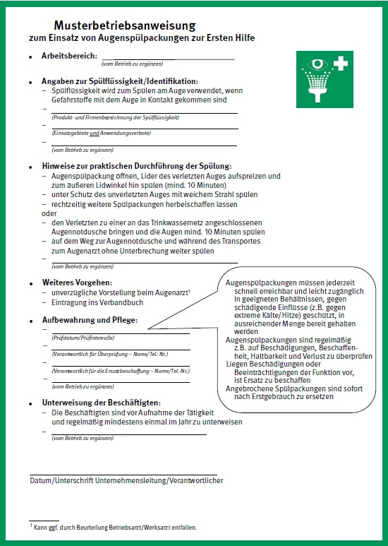

– Leitlinie der Arbeitsgruppe "Spülflüssigkeiten" bei der Berufsgenossenschaft Rohstoffe und chemische Industrie, Stand: Juni 2013 –
Bei Verätzungen, Verbrennungen, Verbrühungen und Kontaminationen jeglicher Art ist nach dem derzeitigen wissenschaftlichen Stand der Kenntnis das sofortige Spülen mit viel Wasser Mittel der ersten Wahl. Dies ist die wichtigste Erste Hilfe-Maßnahme, die auch von Laien vorbehaltlos sofort und universell als wichtigste Maßnahme der Ersten Hilfe mit Erfolg angewandt wird. Körpernotdusche und Augennotdusche erreichen dabei mit ihrem hohen Volumenstrom und einer hohen Strömungsgeschwindigkeit neben der mechanischen Reinigung auch eine schnelle Abführung von Reaktions- und Verdünnungswärme. Erfahrungen aus der betrieblichen Praxis bestätigen die Effizienz der Wasserspülung, wenn Betroffene und Ersthelfer ausreichend unterwiesen sind und die Spülung ohne Verzug durchgeführt wird. Ausschlaggebend für den Prognosefaktor eines verunfallten Patienten ist damit weniger die Auswahl der Spülflüssigkeit, sondern vor allem eine unverzügliche, effiziente und ausreichend lange Spülung mit einer ausreichenden Menge Flüssigkeit! Die jederzeitige Verfügbarkeit muss gewährleistet sein, ein Zeitverlust bis zum Spülen ist unbedingt zu vermeiden.
Spülflüssigkeiten oder andere in Behältnisse abgepackte Lösungen können eingesetzt werden
Die Spülung muss unverzüglich einsetzen. Das Herbeischaffen einer spezifischen Spülflüssigkeit darf den sofortigen Spülbeginn nicht verzögern. Die unverzügliche Spülung der Augen, Haut oder Schleimhäute ist entscheidend, um z. B. ätzende oder giftige Stoffe möglichst unverzüglich zu verdünnen oder zu entfernen und einen Körperschaden möglichst gering zu halten.
Neben den fest installierten Körper- und Augenduschen werden auch Spülflüssigkeiten an Arbeitsplätzen eingesetzt. Jedoch gibt es in Deutschland keinen Standard, der zur Bewertung von Spülflüssigkeiten als Mittel der Ersten Hilfe nach biologischen, chemischen und/oder physikalischen Einwirkungen herangezogen werden kann. Somit gibt es keine einheitliche Kennzeichnung von Spülflüssigkeiten dahingehend, welche Anforderungen erfüllt sind.
Zielgruppe dieser Leitlinie sind Personen, die in ihrem Aufgabenbereich für den Einsatz von Spülflüssigkeiten verantwortlich sind sowie Personen, die zu Fragen der Ersten Hilfe bei entsprechenden Einsatzgebieten beratend tätig sind.
Werden Spülflüssigkeiten eingesetzt, soll diese Leitlinie dem Unternehmer Beurteilungskriterien und Informationen über die Anforderungen an Spülflüssigkeiten als Mittel der Ersten Hilfe geben, damit dieser die verschiedenen Zubereitungen miteinander vergleichen und die für ihn geeignete Spülflüssigkeit auswählen kann.
Diese Leitlinie wurde von einem Expertenteam unter Berücksichtigung betrieblicher Erfahrungen und der einschlägigen Literatur erarbeitet. Sie beschreibt Anwendungshinweise und Anforderungen an die Produkte.
Diese Leitlinie gilt für Maßnahmen der Ersten Hilfe bei Unfällen mit z. B. ätzenden oder giftigen Stoffen an Arbeitsplätzen, wenn insbesondere keine Notduschen mit fließendem Wasser zur Verfügung stehen.
Sie bezieht sich weder auf die sekundäre Notfallversorgung durch medizinisches Fachpersonal, noch auf die spezifische ärztliche klinische Behandlung.
Spülflüssigkeiten im Sinne dieser Leitlinie sind Flüssigkeiten, die im Voraus hergestellt und in Behältnissen abgepackt als Mittel der Ersten Hilfe zum Spülen von Augen oder Haut zum Einsatz kommen.
Augenspülflüssigkeiten im Sinne dieser Leitlinie sind zur Anwendung am Auge bestimmte Spülflüssigkeiten.
Der Unternehmer hat dafür zu sorgen, dass zur Ersten Hilfe und zur Rettung aus Gefahr die erforderlichen Einrichtungen und Sachmittel zur Verfügung stehen [DGUV Vorschrift 1 "Grundsätze der Prävention"].
Die Installation von Notduschen wird in der DGUV Information 213-850 "Sicheres Arbeiten in Laboratorien" und den Technischen Regeln für Gefahrstoffe Laboratorien (TRGS 526) gefordert. Arbeitsplätze mit ähnlicher Gefährdung sind entsprechend dem hier beschriebenen Stand der Technik ebenfalls mit Notduschen einzurichten.
Wenn kein fließendes Wasser zur Verfügung steht, kann die mit Trinkwasser gespeiste Augennotdusche in Abweichung von diesen Regeln durch Augenspülflüssigkeiten ersetzt werden.
Augenspülpackungen, die für die Erste Hilfe bei Augenverätzungen dienen, müssen der DIN 12930 entsprechen. Diese Norm gilt ausdrücklich nicht für in Augenspülpackungen vorrätig gehaltene Spülflüssigkeiten.
Spülflüssigkeiten sind entweder vom Bundesinstitut für Arzneimittel und Medizinprodukte (BfArM)/Deutsche Arzneimittelagentur zugelassene Arzneimittel nach AMG, oder Körperpflegemittel nach der Kosmetik-Verordnung zum Lebensmittel- und Futtermittelgesetzbuch oder Medizinprodukte nach MPG.
Weitere rechtliche Grundlagen im nationalen Recht sind die Arbeitsstättenverordnung in Verbindung mit den dazugehörigen Regeln für Arbeitsstätten ASR A4.3, das Arbeitsschutzgesetz, die Gefahrstoffverordnung sowie die nachgeschalteten Technischen Regeln zur Gefahrstoffverordnung in dem Rahmen, in dem sie dem aktuell geltenden Recht noch entsprechen (z. B. TRGS 526).
Spezielle Maßnahmen der Ersten Hilfe werden z. B. in EU-Sicherheitsdatenblättern, den Stoffmerkblättern (M-Reihe) der Berufsgenossenschaft Rohstoffe und chemische Industrie (BG RCI) sowie den Gefahrstoffinformationssystemen der gewerblichen Berufsgenossenschaften (GESTIS-, GISBAU- und GisChem-Datenbanken) und in verschiedenen branchen-spezifischen DGUV Informationen behandelt.
Spülflüssigkeiten können unter Berücksichtigung der betrieblichen Rahmenbedingungen als Mittel der Ersten Hilfe bei Unfällen mit z. B. ätzenden oder giftigen Stoffen zum Einsatz kommen. Eine Musterbetriebsanweisung zum Einsatz von Augenspülpackungen zur Ersten Hilfe enthält Anhang 1.
Für eine ausreichende Erste Hilfe ist eine Spüldauer von mindestens 10 bis 20 Minuten nötig. Hierfür sind erfahrungsgemäß etwa 5 bis 10 Liter Flüssigkeit notwendig, was das Vorhalten einer entsprechenden Anzahl von Spülpackungen erforderlich macht.
Die weitere Behandlung des Verunfallten mit Spülflüssigkeiten liegt ausschließlich in der Verantwortung des weiterbehandelnden medizinischen Fachpersonals.
Wenn an Arbeitsplätzen ein Risiko ausschließlich nur für Säuren- oder nur für Laugenverletzungen besteht, kann die Vorhaltung spezifischer Spülflüssigkeiten im Rahmen der Ersten Hilfe sinnvoll sein, da es experimentelle Hinweise darauf gibt, dass sich Spülflüssigkeiten in unterschiedlichem Maße für Laugen- bzw. Säurenverätzungen eignen. Die Anwendung darf nicht zu Zeitverlust führen.
Werden Spülflüssigkeiten im Betrieb ausnahmsweise für Anwendungen bereitgestellt, für die sie seitens des Herstellers nicht ausdrücklich bestimmt sind, ist die Eignung zu beurteilen und zu dokumentieren.
Spülflüssigkeiten müssen die grundlegenden Anforderungen bezüglich ihrer Qualität, ihrer Sicherheit und gesundheitlichen Unbedenklichkeit sowie ihrer Zweckbestimmung (Wirksamkeit) erfüllen (z. B. nach MPG, AMG oder der Kosmetik-Verordnung).
Sicherheitsbewertung des Herstellers/Inverkehrbringers:
Alle Bestandteile müssen nach Art und Menge in einer wissenschaftlichen Bezeichnung oder nach INCI (International Nomenclature of Cosmetic Ingredients) auf der Verpackung gekennzeichnet sein. In begründeten Ausnahmefällen ist die alleinige Kenntlichmachung der enthaltenen Stoffe ausreichend.
Augenspülflüssigkeiten müssen steril sein.
Spülflüssigkeiten sollen frei von Partikeln sein, sie müssen frei von sichtbaren Partikeln sein. Geeignete Prüfvorschriften sind u. a. im Arzneibuch angegeben.
Konservierungsmittel dürfen nicht enthalten sein.
Gepufferte Augenspülflüssigkeiten müssen isohydrisch (annähernd pH-neutral) sein, ungepufferte Augenspülflüssigkeiten und andere Spülflüssigkeiten sollen isohydrisch sein; der pH-Wert darf nur in begründeten Ausnahmefällen vom physiologischen Bereich (etwa pH 7,2) abweichen.
Alle Bestandteile müssen die erforderliche Qualität haben, vorzugsweise nach dem geltenden Arzneibuch.
Spülflüssigkeiten sollen annähernd isotonisch zur Tränen- und Gewebsflüssigkeit sein; Ausnahmen müssen begründet sein.
Soweit nicht eine Arzneimittelzulassung vorliegt (in welcher dies ohnehin Voraussetzung ist), müssen die Anwendungsgebiete genau beschrieben sein. Die Wirksamkeit und Unbedenklichkeit bei der beanspruchten Anwendung (Zweckbestimmung) müssen im Zuge einer Sicherheitsbewertung unter eingehender Berücksichtigung des toxikologischen Profils der Bestandteile und der Einsatzbedingungen am Arbeitsplatz durch Untersuchungen belegt oder nach anerkanntem Erkenntnisstand plausibel sein.
Arbeitgeber und Anwender, die Spülflüssigkeiten am Arbeitsplatz bereitstellen bzw. einsetzen, benötigen für die richtige Auswahl bzw. optimale Anwendung eine Reihe von Informationen. In aller Regel sind sie hierzu auf Angaben des Herstellers/Inverkehrbringers angewiesen. Diese sind im Folgenden beispielhaft aufgelistet. Wichtige Informationen sollen auf dem Behältnis gekennzeichnet werden.
Relevante Produktinformationen:
Weitere wichtige Informationen:
Kennzeichnung auf dem Behältnis:
Verpackung:
Spülflüssigkeiten zur Anwendung am Auge müssen steril sein.
Spülflüssigkeiten dürfen nur in Einzeldosis-Behältnissen mit Originalitätssicherung in Verkehr gebracht werden.
Das Produkt muss eindeutig der vorgesehen Anwendung zuzuordnen sein. Der Anwender muss auf den ersten Blick erkennen können, dass es sich um eine Spülflüssigkeit zur Anwendung als Mittel der Ersten Hilfe handelt. Das Gleiche gilt auch für den jeweiligen Einsatzbereich. Piktogramme (z. B. Rettungszeichen E06) sind in diesem Zusammenhang zu empfehlen.
Die nachfolgenden Zitate geben den Stand 06/2013 wieder. Bei Gesetzen und Verordnungen ist selbstverständlich immer der neueste Stand zu Grunde zu legen:
